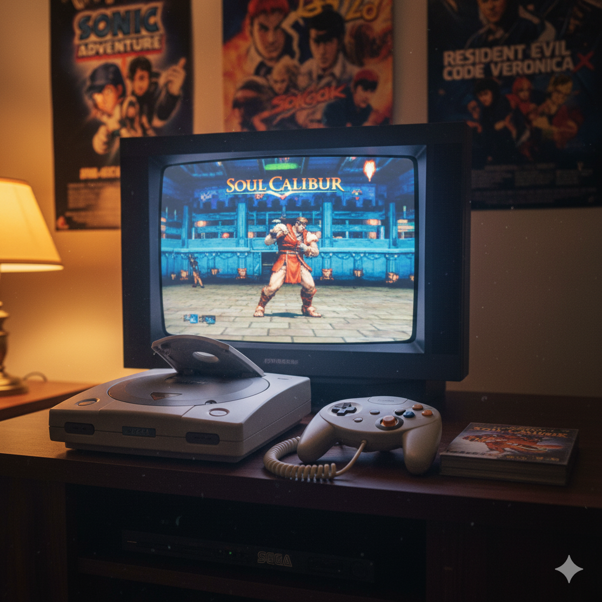

SEGA
Hang-On
Mejores gráficos

Soul Calibur
Juegos online
Memoria visual (VMU)
| Juegos Icónicos de SEGA | |||||||
|---|---|---|---|---|---|---|---|
| Año | Consola | Fabricante | Juegos Populares | Innovaciones | Imagen | Vídeo 1 | Vídeo 2 |
| 1985 | Sega Master System | Sega | Alex Kidd in Miracle World Hang-On |
Competencia directa con NES Mejores gráficos |
|
||
| 1998 | Dreamcast | Sega | Sonic Adventure Soul Calibur |
Módem integrado Juegos online Memoria visual (VMU) |
 | ||